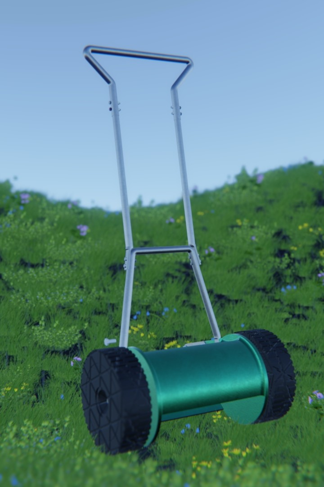
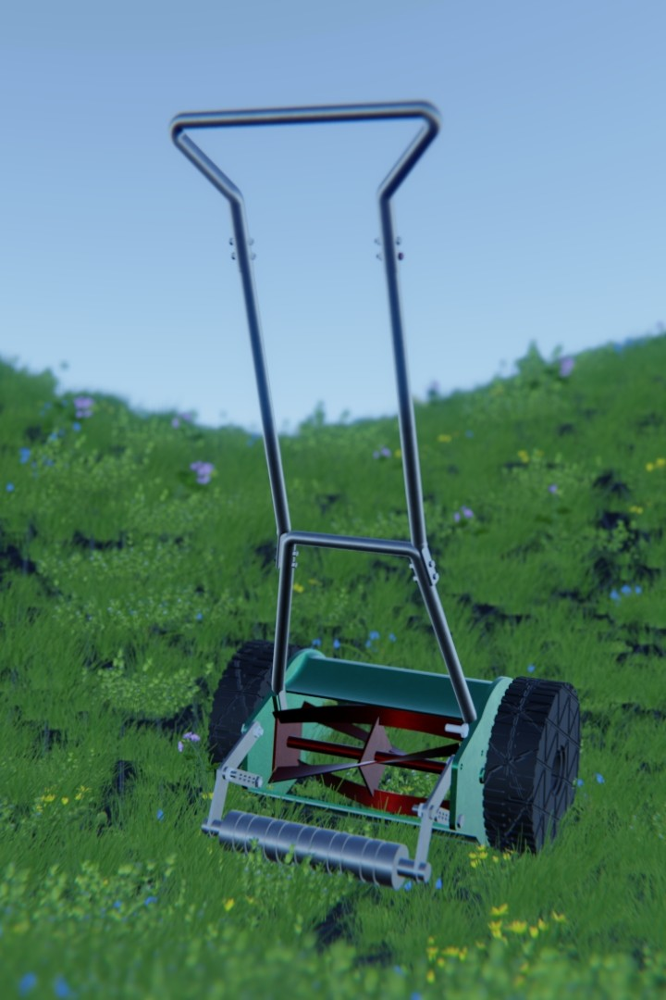

Web Portfolio
A responsive portfolio website showcasing engineering projects, academic coursework, and web applications with light/dark theme toggling.
Tech: HTML5, CSS3, JavaScript
Final Year Engineering Student @ ESTIA | Numerical Conception and Innovation
Bidart, France
Seeking Final-Year Internship: March – August 2027
I am a final-year Engineering student at ESTIA Institute of Technology, specializing in Digital Design and Innovation and pursuing a double degree at Cranfield University. With hands-on experience in full-stack web development (React/TypeScript, Node.js/Express) applied to GIS and agricultural platforms, I bridge technical rigor with innovative user experience design. I am currently seeking a 6-month final-year internship starting March 2027.

ESTIA Institute of Technology | Bidart, France — Since Sept 2024
Specialization: Digital Design and Innovation (CNI)
Double-Degree Exchange: Cranfield University (Starting Oct 2026)
Erasmus+ Semester: Savonia University of Applied Sciences, Finland (Jan – May 2026)
Lycée François René de Chateaubriand | Rennes, France — 2022 – 2024
Intensive two-year undergraduate program in advanced Mathematics, Physics, and Engineering Sciences.
Research Project (TIPE): Experimental study and modeling of magnetic braking systems for self-belay devices.
Lycée Marcel Gambier | Lisieux, France — Graduated 2022
Majors: Mathematics, Physics-Chemistry | Option: Advanced Mathematics
High Honors (Mention Très Bien)A selection of academic and personal projects demonstrating my technical skills:
A responsive portfolio website showcasing engineering projects, academic coursework, and web applications with light/dark theme toggling.
Tech: HTML5, CSS3, JavaScript
A web application designed for tracking daily habits and goal streaks. Built as a standalone client-side application featuring local state persistence (LocalStorage) and lightweight smart assistance features based on a static AI model proof-of-concept.
Tech: JavaScript, LocalStorage, Vercel
A minimalist note-taking application demonstrating CRUD operations and UI responsiveness. Operates fully on client-side storage without active database server maintenance.
Tech: HTML/CSS, JavaScript, Web Storage API
A dynamic web application fetching real-time meteorological data using asynchronous JavaScript and public third-party REST APIs.
Tech: Asynchronous JS, REST APIs, JSON
Interactive client-side demonstration showcasing real-time data fetching, error handling, and DOM rendering using asynchronous JavaScript.
Awaiting input...
Combining hands-on craft, 3D CAD modeling, and physical experimentations with engineering rigor.


Applying 2D geometry, structural alignment, and material stress analysis to pattern drafting, garment prototyping, and precision assembly.


Designing functional mechanical parts and enclosures using OnShape CAD, focusing on parametric modeling, assemblies, and tolerance analysis.
Experimental study and mathematical modeling of magnetic eddy-current braking systems designed for climbing self-belay mechanisms.
Extracurricular engagements showcasing discipline, adaptability, project management, and global exposure.
Practicing advanced equestrian sport requiring constant emotional control, risk assessment, continuous routine discipline, and daily commitment to animal welfare and safety.
Managed an autonomous micro-enterprise providing game mastering, interactive animation, and event hosting for escape games. Handled administrative management, client relations, flow control, and real-time problem solving under time constraints.
Demonstrated high autonomy and cross-cultural adaptability through academic and personal mobility in Nordic and Anglo-Saxon environments, managing independent logistics, housing, and integration.
Maintaining a structured weekly athletic regimen (functional training, kettlebell workouts, water aerobics, daily walking, and hiking), driving endurance, physical consistency, and stress resilience.